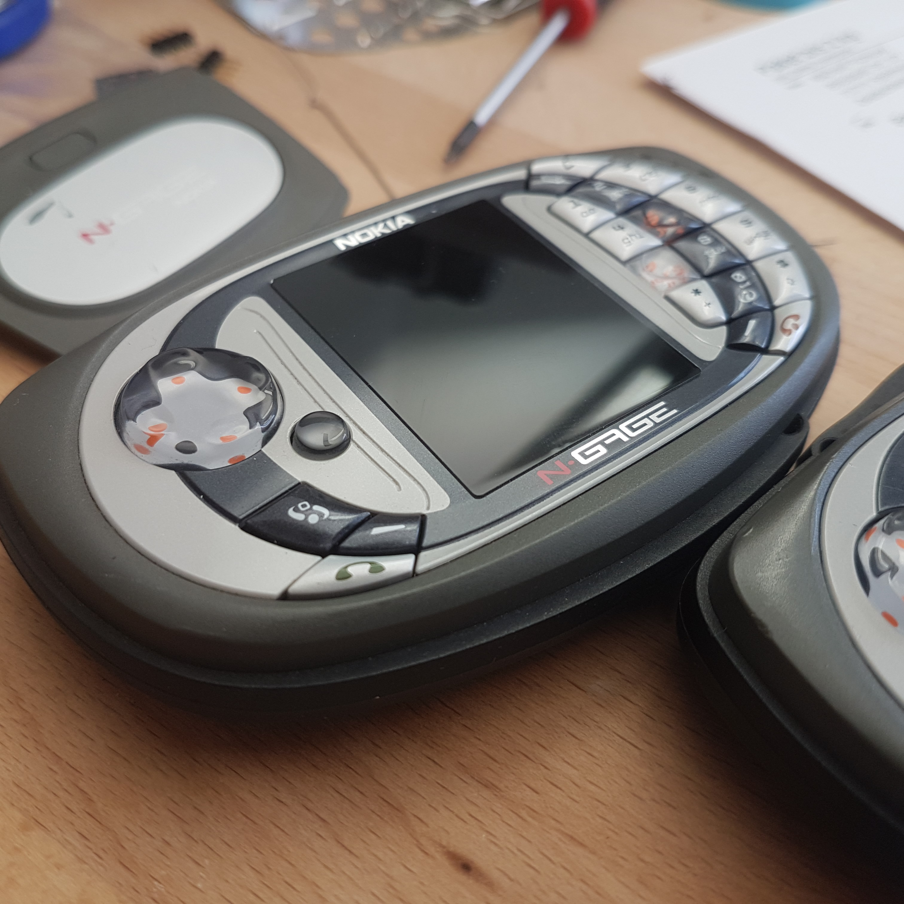
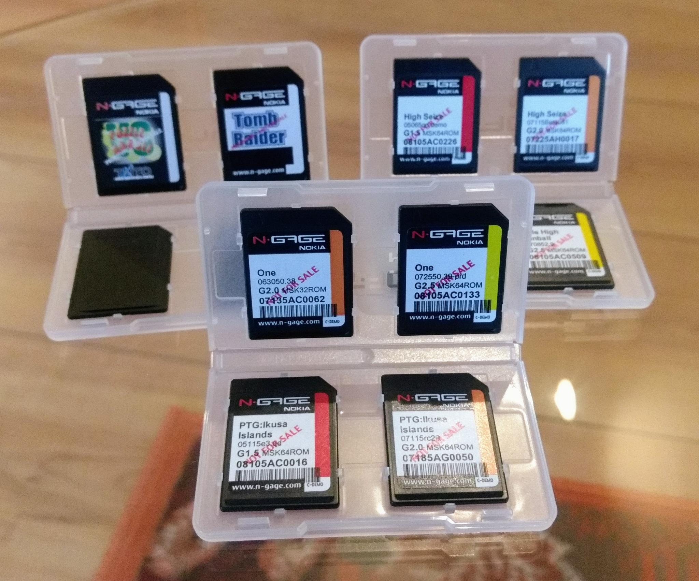

This article is all about video game preservation, the value of things, the Nokia N-Gage and most and foremost why it is important to preserve it for posterity.
First of all, I would like to introduce myself: my name is Michael Fitzmayer, I'm a dad, husband, gearhead and software developer. About in this order.
When I'm not working on my projects or wrenching on old mopeds, I work as an embedded software developer in a company for mobile and industrial automation technology. Other than that, I have a great interest in hacker culture and feel part of it.
But probably the most relevant aspect of myself that plays a role in this article: I love video games. I always have, for over 30 years, and always will. This love has always included the Nokia N-Gage, ever since it came into my life, and even if it ultimately did not give Nokia the success the company deserved, it has always connected and continues to connect a group of enthusiasts who share this passion.
Last year, we started a small but steadily growing online community dedicated solely to the N-Gage era. Old hands meet there, but also interested people who have received an old device as a gift and would like to learn more about it. If these units are broken, we can often offer our help and knowledge or repair them, usually completely without the intention of making a profit. Because it's very dear to us that people can experience the N-Gage the way we do.
But one of the most important goals of our work: to preserve this part of video game history for all future generations to come. This is where the N-Gage becomes particularly interesting, because in addition to the 55 games that were commercially available, there were at least half as many titles that never made it to a public release. You quickly feel like a digital archaeologist digging for old treasures in order to recreate the historical context of these possible finds.
This is exciting but unfortunately also more difficult with every month that passes. There are many reasons for this:
And the longer this search lasts, the smaller the chances of
finding something new, and with every chance that is lost, there
is one more title that remains lost forever.
In addition,
time is pressing. The lifespan, especially of the flash cells on
the writeable memory cards, will soon have exceeded their
guaranteed lifespan.
Fortunately, there are organisations such as the Internet Archive or the Video Game History Foundation that have made it their business to counteract this development. The Internet Archive now has a gigantic and constantly growing collection of games that are now accessible to a broad and interested mass. Thousands of them can be played directly in the browser.
At this point, we would like to appeal to you, former Nokia employees or partners who experienced this era from a unique perspective, and ask you to support us in our efforts.
Do you perhaps still have an old document in a drawer that could be of interest? Or even an old memory card that has been forgotten over the years? Or even a copy of the N-Gage SDK that could secure the future development of this peculiar platform? Please let us know.
We and hopefully future generations will thank you, and on behalf of the entire N-Gage Online community, thank you for your time and attention. — Michael, mupf.dev
“If there's any advice I have for people out there it's that if your project, whatever it is, ends up being cancelled please consider making a file folder with the name of your project, throwing everything you have in there and putting it away. We as audience, fans and historians have discovered that no matter how minor you may have felt your work was, no matter how sad you are that it never reached some sort of goal or completion, the applause, the appreciation, the debt of hunger for the knowledge of what you worked on will come. It will take years, it will take a very long time, but your file folder of memories, ideas and sketches will be as like gold when you bring it out into the world in years hence. And I aim this advice to people at any stage in their career, beginning middle and nadir.” — Jason Scott, Free Range Archivist and Software Curator at Internet Archive